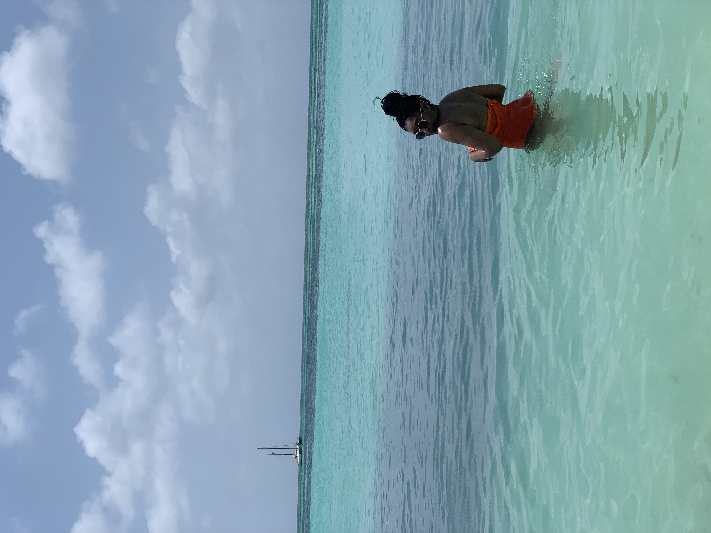
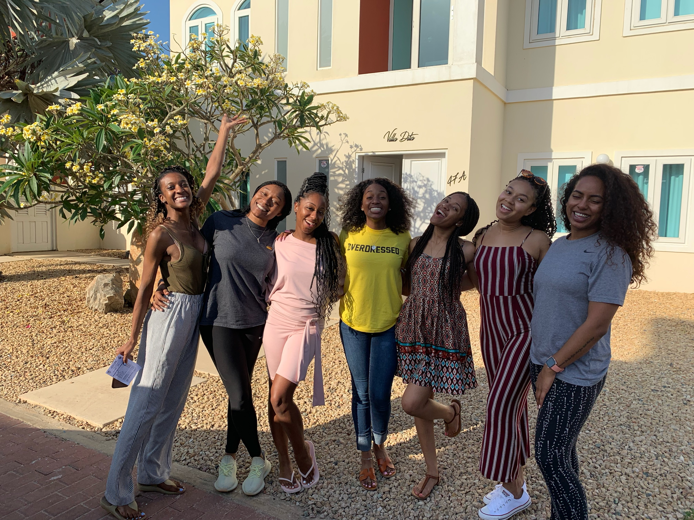
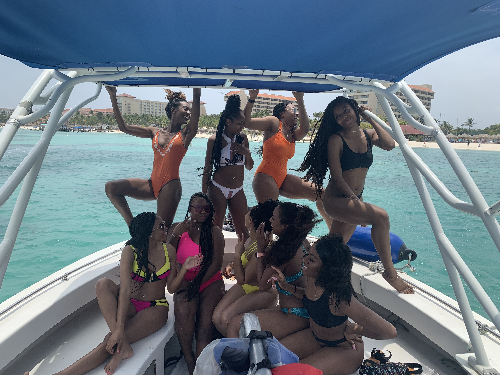
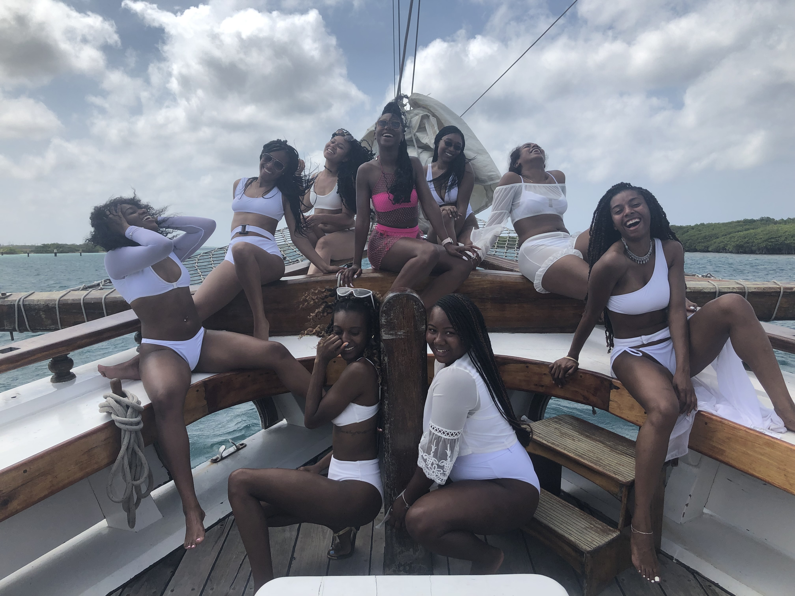
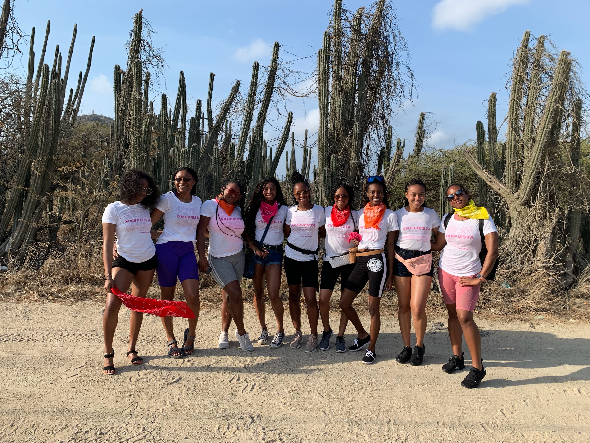
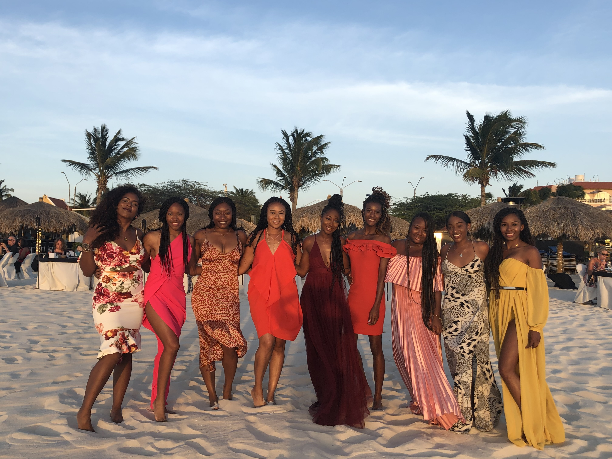

 Aruba is a small island in the southern Caribbean Sea and it is known as "One Happy Island". It's population is around 100,000 and most navites speak 3-4 languages including Papiamento and Dutch as the official languages. Last month I had to pleasure of visiting Aruba with a group of girls celebrating my friends 25th birthday. We stayed for 4 days and 4 nights and rented a beautiful house. Did i mention there were 9 girls????
 On the first day everyone was arriving. The last two people arrived around 3pm. After everyone made it we shuttled to our house "Villa Dita". It was a 5 bedroom 5 bath home with a fenced in backyard, pool, and grill area. After picking rooms and getting settled celebratory shots were a must. We spent a few hours swimming, drinking and enjoying each others company. We deceided to explore the town that evening found good food and a club to go to.
 Second day started with one of the activties we had planned. Parasailing with the girls and spending the day at the beach. We arrived at about 9am to get ready. This was my second time parasailing (The first time was in Mexico a few months back with my mom). We were taken out on a smaller boat to a bigger one that would be pulling us. We went up two at a time and one girl had to go up alone. We were out in the water for about two hours becasue our group was so large and they wanted to give us all a fair amount of time. When we finally made it back to the beach it was time for more drinks!! We spent most of the day basking in the sun, swimming in the ocean, and other water activties. Later that night we got all dressed up went to dinner and then out to a couple popular tourist clubs to dance.
 Third day started early again after a long night. This time we were going on a Booze Cruise. We boarded the boat arou ond 9am. The crew on the ship was awesome from the Captiain to the cooks. The ride was both relaxing and fun. Aboard we had an what felt like endless supply of alchol and food, we also got to snorkle and swing from a rope into the water. The crew even let my friends and I be the DJ the whole time. We got done with the cruise aruond 3 exhausted. Our plan was to head home shower and find more food. After food almost everyone was ready for a nap. Little to our surprise we woke up from our nap with no power... ON THE WHOLE ISLAND! Ended up being a great thing because we were planning to go out again that night and we wouldnt have made it to our activity the next morning if we had.
 Fourth and final day we got up early for one last adventure. ATV riding aroun Aruba. This was my first time riding on a ATV and I was pretty excited. We had cute matching shirts and bandanas. We went all around on some smooth and rough terrain. Despite the blazing sun and dust everywhere I had an amazing time. Even after almost throwing myself completely off the bike. I had a blast and the sites we saw were totally worth possibly breaking a leg or arm. ATVs took up most the day and after and we were DRAINED. We went home after to begin packing and getting ready for our last dinner together. Later that evening we got all dressed and have dinner on the beach with all the girls for a final celebratory meal.
 This trip had a lot of first for me. First time to Aruba obviously. First time traveling with that many girls. First time riding an ATV. All and all it was amazing and I would happily go back. Everyone we met was so friendly and gave such warm welcomes. The only weird thing was that everywhere we went people took their phones our and started taking picture or videos of us. Both natives and tourist. We werent sure why but it definetly amused us. As far as actual activities I would definetly recommend ATVing and the Booze Cruise if you like to chill and drink. Its a great place to go with friends or as a couple and it wasnt too expensive.